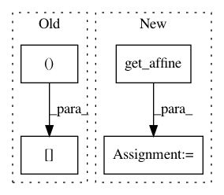

422881afa09ccd1e5a19ae31a38638e04d6eae7d,plot_localizer_simple_analysis.py,,,#,23
Before Change
// Plot Anova p-values
plt.figure(figsize=(5.5, 5.5))
masked_pvals = np.ma.masked_less(neg_log_pvals_anova_unmasked.get_data(), vmin)
plt.imshow(np.rot90(nifti_masker.mask_img_.get_data()[:, :, picked_slice]),
interpolation="nearest", cmap=plt.cm.gray)
im = plt.imshow(np.rot90(masked_pvals[:, :, picked_slice]),
interpolation="nearest", cmap=plt.cm.autumn,
After Change
// Various plotting parameters
z_slice = 45 // plotted slice
from nilearn.image.resampling import coord_transform
affine = neg_log_pvals_anova_unmasked.get_affine()
_, _, k_slice = coord_transform(0, 0, z_slice,
linalg.inv(affine))
k_slice = round(k_slice)
threshold = - np.log10(0.1) // 10% corrected
// Plot Anova p-values
In pattern: SUPERPATTERN
Frequency: 3
Non-data size: 4
Instances
Project Name: nilearn/nilearn
Commit Name: 422881afa09ccd1e5a19ae31a38638e04d6eae7d
Time: 2014-11-24
Author: loic.esteve@ymail.com
File Name: plot_localizer_simple_analysis.py
Class Name:
Method Name:
Project Name: nilearn/nilearn
Commit Name: b28f80346270231ff2ef253af7ef4c5cd37f0916
Time: 2014-03-31
Author: virgile.fritsch@gmail.com
File Name: plot_localizer_mass_univariate.py
Class Name:
Method Name:
Project Name: nipy/dipy
Commit Name: b125873cb6e0fa9f99137b256ac5fc602e4b72f1
Time: 2014-01-17
Author: Samuel.St-Jean@usherbrooke.ca
File Name: dipy/denoise/tests/test_nlmeans.py
Class Name:
Method Name: test_nlmeans